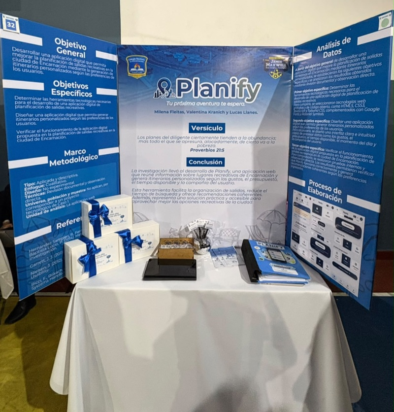

Planify es una plataforma web creada para ayudar a las personas a descubrir lugares y organizar planes personalizados en Encarnación. La plataforma permite generar recomendaciones teniendo en cuenta diferentes preferencias, como el presupuesto, el clima, el horario, el estado de ánimo y la compañía.
Proyecto realizado junto a Milena Fleitas y Lucas Llanes.